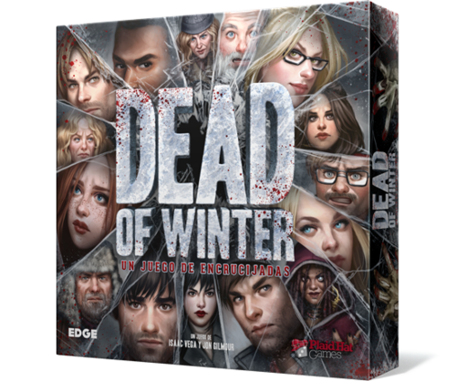
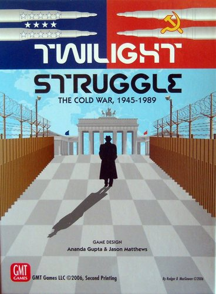
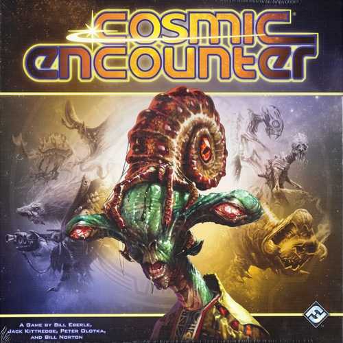

So, you want to play a board game!
Are you tired of playing children's games like Monopoly and Life? Looking for something that goes beyond Settlers of Catan? Looked down upon by the nerds at your local tabletop shop? Never fear! Eliminate the pressure by letting me recommend you a great game to play
What I am playing right now
Are you in the mood for zombies and possible betrayal?
Awesome! What could be more fun? You should play:
Dead of Winter

Description from Board Game Geek:
Dead of Winter pus 2-5 players in a small, weakened colony of survivors in a wolrd where most of humanity is either dead or diseased, flesh craving monsters.
Each player leads a faction of survivors with dozens of different characters in the game. Dead of Winter is a meta-cooperative psychological survival game. This means players are working together toward one
common victory condition - but for each individual player to achieve victory, he must also complete his personal secret objective. This secret objective could relate to a psychological tick that is fairly harmless
to most others in the colony, a dangerous obession that could put themain objective at risk, a desire for sabotage of the main mission, or (worst of all) vengeance
against the colony!
Are you in the mood for an epic cold war struggle between the USA and the USSR?
Why wouldn't you be? I hope you have a spare 5 hours. You should play:
Twilight Struggle

Description from Board Game Geek:
In 1945, unlikely allies toppled Hitler's war machine, while humanity's most devastating weapons forced the Japanese Empire to its knees in a storm of fire. Where once there stood many great powers, there then stood only two.
The world had scant months to sigh its collective relief before a new conflict threatened. Unlike the titanic struggles of the preceding decades, this conflict would be waged not primarily by soldiers and tanks, but by spies and politicians, scientists and intellectuals,
artists and traitors. Twilight Struggle is a two-player game simulating the forty-five year dance of intrigue, prestige, and occasional flares of warfare between the Soviet Union and the United States. The entire world is the stage on which these two titans fight to make
the world safe for their own ideologies and ways of life. The game begins amidst the ruins of Europe as the two new "superpowers" scramble over the wreckage of the Second World War, and ends in 1989, when only the United States remained standing.
Are you in the mood for negotiating with several alien races?
Perfect! You should play:
Cosmic Encounter

Description from Board Game Geek:
Build a galactic empire... In the depths of space, the alien races of the Cosmos vie with each other for control of the universe. Alliances form and shift from moment to moment, while cataclysmic battles send starships screaming
into the warp. Players choose from dozens of alien races, each with its own unique power to further its efforts to build an empire that spans the galaxy.In Cosmic Encounter, each player is the leader of an alien race. On a player's turn, he or she becomes the offense. The
offense encounters another player on a planet by moving a group of his or her ships through the hyperspace gate to that planet. The offense draws from the destiny deck which contains colors, wilds and specials. He or she then takes the hyperspace gate and points at one planet
in the system indicated by the drawn destiny card. The offense vs. the defenses ships are in the encounter and both sides are able to invite allies, play an encounter card as well as special cards to try and tip the encounter in their favor.